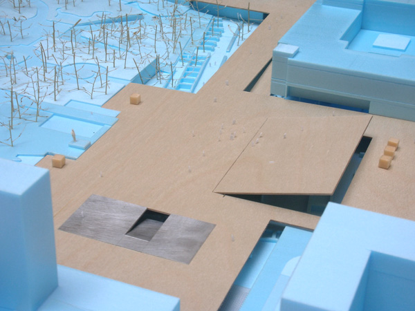

Plovdiv Central Square
Competition 1st Prize - Urban Plan - Plovdiv - 2014

Dillema
In the battle of contemplation versus ‘public use’, Plovdiv’s city center gradually lost the urban unity that was characteristic from its founding.
How can we reconcile the terrifying beauty of the naked ruin with the city’s need for usable open space?
Can we have both? Can archaeological research expand under a fully functioning city surface?


The Stage
The new square will perform as an apparatus for continuous discovery, a malleable surface that can transform to accommodate different urban events. An operable platform is at the heart of the square, that when activated can cover a range between the intimacy of small scale pockets until a fully open and unobstructed plaza.
The new wood surface protects the unveiled ancient Forum, and will cover progressively the entire site, signalling archaeological areas of interest and revealing the tension between above and below ground.
This light veil aims also at transforming the archaeological endeavour in a permanent spectacle, enabling excavations to progress under the city without disruption.
The Underworld
Since the significance and splendour of the Forum of Philippopolis can only be observed once it is fully exposed, we propose to excavate the maximum surface possible of ruins within the limits of the intervention: the new archaeological museum will cover the full extent of the square, and will be landscaped like the Forum in Rome, merging with the park at the western edge, and emerging at the underpasses.
The renovated open basement of the post office would function as its core, housing information center, museum services, temporary exhibitions. The refurbished concrete structure would become in itself an archaeology.
One of the greatest achievements of the Roman system was its practicality: under the coliseum in Rome, a large scale apparatus fed the audiences with an array of events, from wild animals to trees, boats and chariots, it was possible to experience a full range from desert wars to sea battles...
Team: João Moura Fagulha, Raquel Maria Oliveira, João Prates Ruivo. Client: Plovdiv Municipality.